채널: 레디포그로스 (Ready For Growth) | 길이: 15:39 | 날짜: 2026-02-21
손으로 시작, 연습으로 명명, 단위 축소, 밤 에너지를 아침 세팅으로 전환. 이 4개는 뇌의 방어를 줄이고 보상 루프를 자동화하는 “신경친화적 순서”로 제시된다.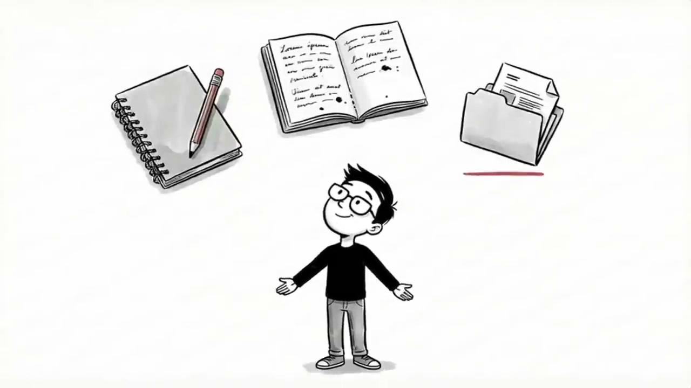
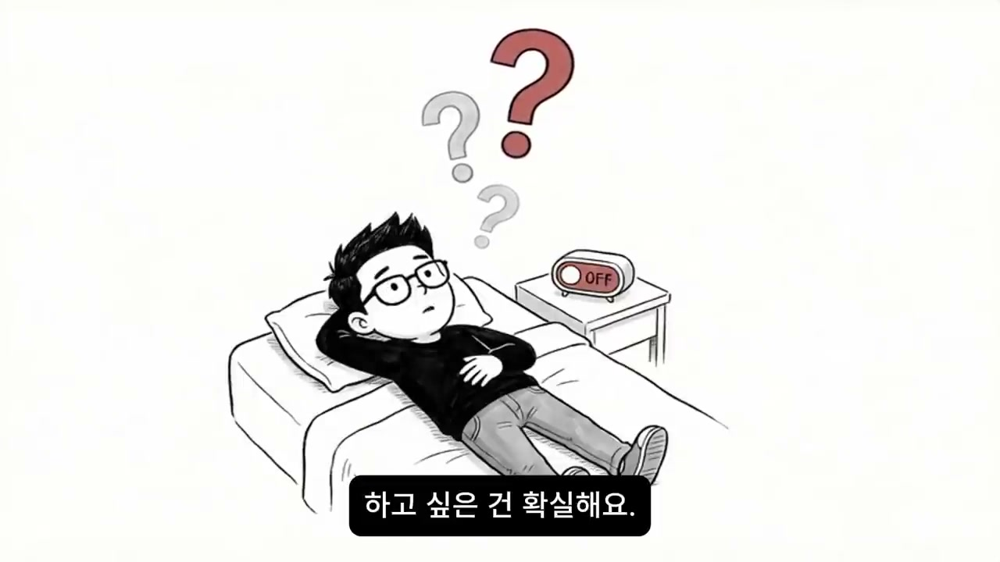
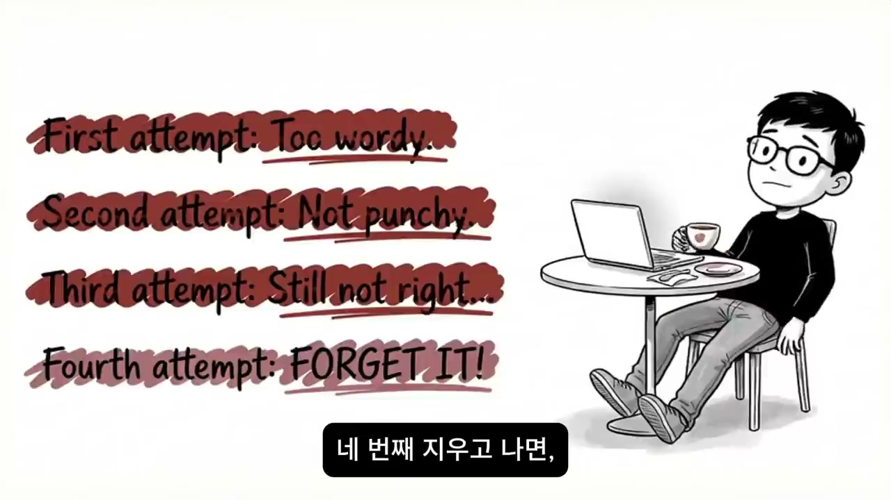
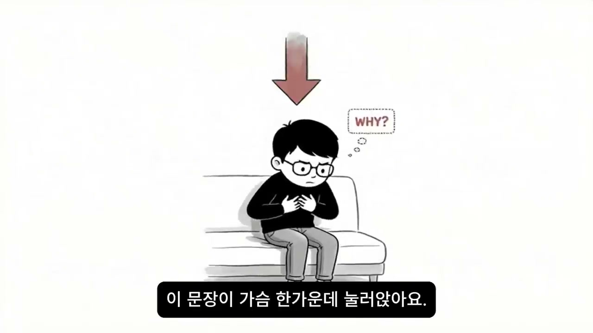
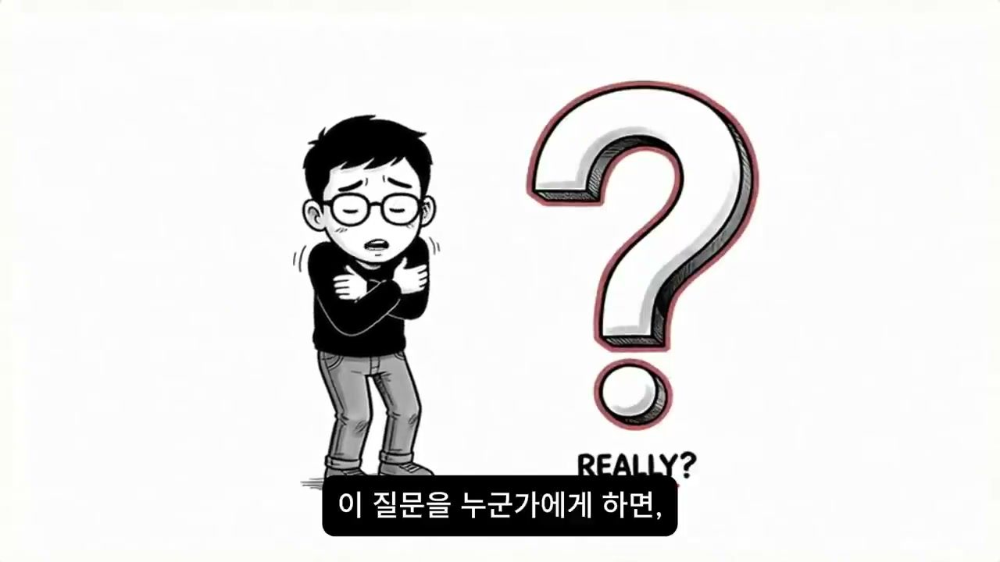
영상은 밤 11시 반, 침대에 누운 화자의 내면에서 시작한다. 평일을 버틴 이유는 “주말엔 내가 진짜 하고 싶은 걸 하겠다”는 기대였고, 머릿속에는 그림의 색감, 글의 문장, 완성된 결과물까지 이미 선명하게 떠오른다. 그런데 매주 같은 결말, 즉 “못 하는 게 아니라 안 하게 된다”는 자기경험이 반복된다고 말한다.
토요일 아침(알람 없이 기상) 장면에서는 “하고 싶은 건 확실한데 어디서부터 시작해야 할지 모르겠다”가 핵심 정서로 제시된다. 잠깐만 보려던 휴대폰이 40분으로 늘어나고, 이불을 정리하면서 “아직 아침이니까 괜찮아”라고 자기합리화한다. 스크린샷에서 OFF 표시된 알람과 머리 위 물음표는 의욕은 있으나 실행 스위치가 꺼진 상태를 시각화한다.
정오 카페 장면은 실행 실패의 미시 과정을 보여준다. 노트북을 열고 파일을 켰지만 빈 화면과 깜빡이는 커서 앞에서 첫 문장을 쓰고 지우기를 반복한다. 화면의 영문 문구 First attempt: Too wordy, Second attempt: Not punchy, Third attempt: Still not right, Fourth attempt: FORGET IT!는 완벽주의적 자기검열의 단계적 심화를 매우 직관적으로 보여준다.
저녁이 되면 “카페에 가서 노트북을 열었다”까지만 했고, 결국 좋아하는 일 자체는 하지 못했다는 회고가 나온다. 이때 올라오는 감정은 분노나 슬픔이 아니라 “나는 왜 좋아하는 것도 못하지”라는 무겁고 눌리는 감각이다. WHY?, REALLY? 같은 시각 텍스트는 이 질문이 단순 궁금증이 아니라 자기정체성 수준의 압박으로 작동함을 강조한다.
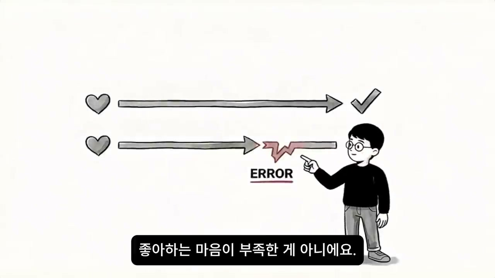
세그먼트 6은 흔한 조언(“진짜 좋아하면 자연스럽게 하게 된다”)을 정면 반박한다. 화자는 오히려 그 일을 떠올릴 때 심장이 뛰고 에너지가 오르는 경험 자체가 이미 ‘좋아함’의 증거라고 말한다. 문제는 감정 강도가 아니라 뇌 작동 구조라는 것이다.
시각적으로도 두 경로가 대비된다. 위쪽 화살표는 체크로 끝나고, 아래 경로는 중간에 끊기며 ERROR로 표시된다. 이는 “좋아하는 마음 부족”이 아니라 “실행으로 이어지는 경로 설계 오류”라는 영상의 핵심 테제를 도식으로 못 박는 장면이다.
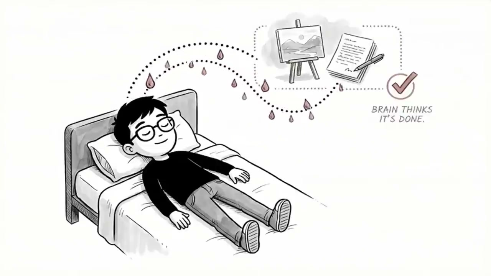
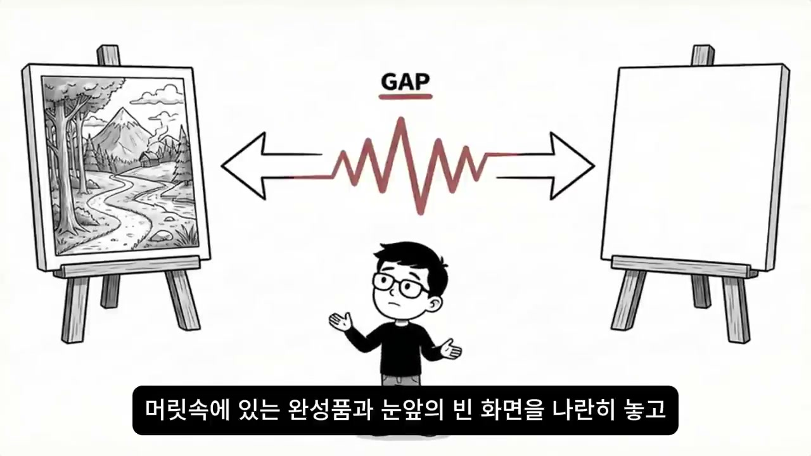
여기서 도파민 정의가 바뀐다. 영상은 도파민의 진짜 역할을 단순 쾌락이 아니라 “이 행동을 하면 좋은 일이 생길 것 같다”는 예측 신호로 설명한다. 밤에 침대에서 완성작을 강하게 상상하는 순간, 실제 실행 전인데도 기대감 도파민이 이미 방출된다는 것이 첫 번째 기전이다.
BRAIN THINKS IT’S DONE라는 화면 텍스트가 이 지점을 명확히 요약한다. 뇌는 상상만으로도 일부 보상을 받은 것으로 착각해 다음 날 실제 행동에 더 많은 도파민을 줄 이유를 잃는다. 그래서 아침 실행 시점에 “왜 이렇게 힘이 안 붙지?”가 발생한다.
곧이어 등장하는 GAP 도식(왼쪽 완성된 풍경 그림 vs 오른쪽 빈 캔버스)은 두 번째 기전을 설명한다. 머릿속 완성품과 눈앞의 빈 현실을 나란히 놓는 비교 자체가 간극을 과장하고, 간극이 클수록 위험 신호가 커져 시작을 더 어렵게 만든다.
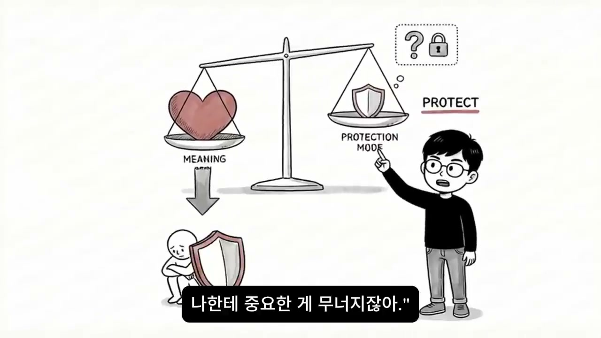
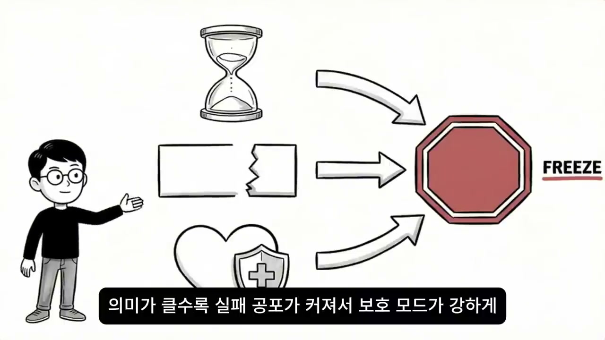
세그먼트 9는 왜 ‘좋아하는 일’에서 특히 더 멈추는지 설명한다. 뇌는 의미를 정밀하게 처리하므로, 의미가 큰 일은 실패 시 고통도 크게 사전 계산한다. 그래서 “이게 무너지면 나한테 중요한 게 무너진다”는 보호 논리가 작동한다.
저울 도식에서 MEANING(심장)과 PROTECTION MODE(방패)가 함께 등장하고, 인물 옆에 PROTECT가 강조된다. 이는 동기 시스템이 부족해서 멈추는 게 아니라, 위험 관리 시스템이 과활성화되어 멈추는 것임을 시각적으로 재확인한다.
세그먼트 10은 세 가지를 한 줄로 묶는다. 상상에서 도파민 선소진 + 이상/현실 간극 경보 + 의미가 클수록 실패 공포 증폭이 동시에 작동하면 보호 모드가 강하게 걸린다. 화면의 FREEZE(정지 신호) 도식은 바로 이 복합결과를 표현한다.
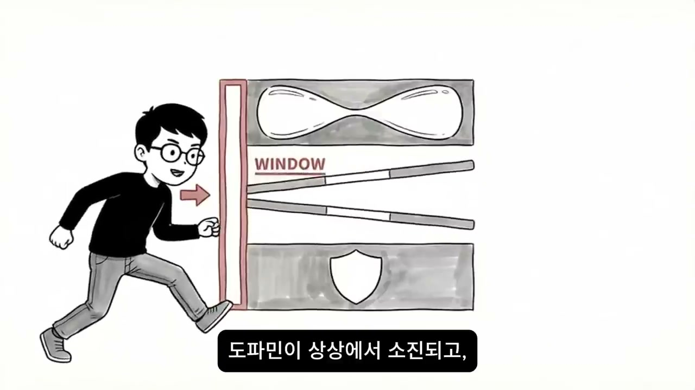
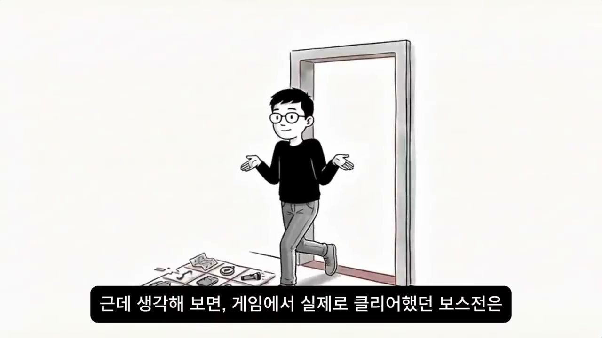
세그먼트 11은 “그럼 답이 없는가?”에 답한다. 영상은 세 메커니즘이 본격 작동하기 전에 끼어들 수 있는 WINDOW가 있다고 말한다. 즉, 상상-비교-경보 루프가 닫히기 전에 신체 행동으로 진입하면 시스템을 바꿀 수 있다는 주장이다.
게임 비유는 매우 구체적이다. 보스전 앞에서 인벤토리만 열고 닫고, 포션 정리, 장비 확인, 스킬 배치만 바꾸며 입장을 미루는 상태가 바로 완벽주의적 준비중독이라는 것이다. 핵심은 실력이 없어서가 아니라 “너무 중요해서 져선 안 된다는 압박” 때문에 준비만 무한 반복한다는 점이다.
실제 클리어는 대개 “일단 들어가 보자” 하고 버튼을 눌렀을 때 나왔다는 회상도 제시된다. 즉, 완벽한 준비가 아니라 생각 중단 + 입장 행동이 전환점이었다는 결론이다.
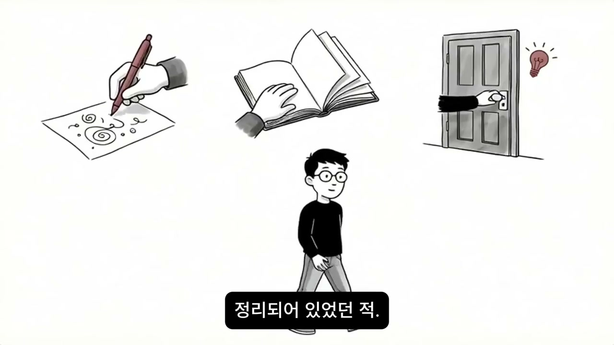
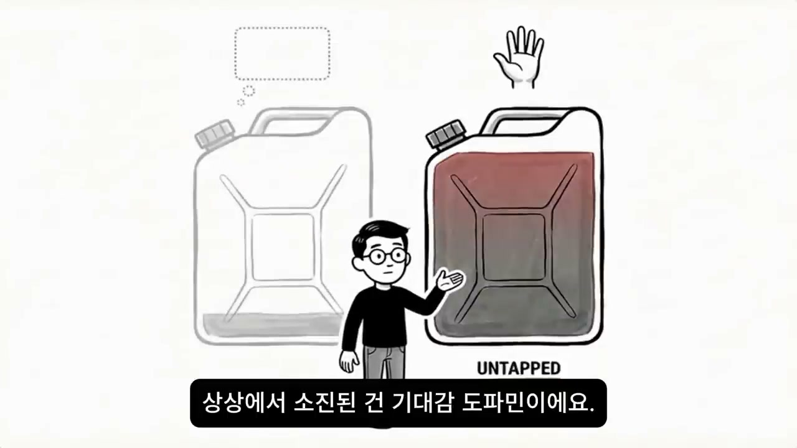
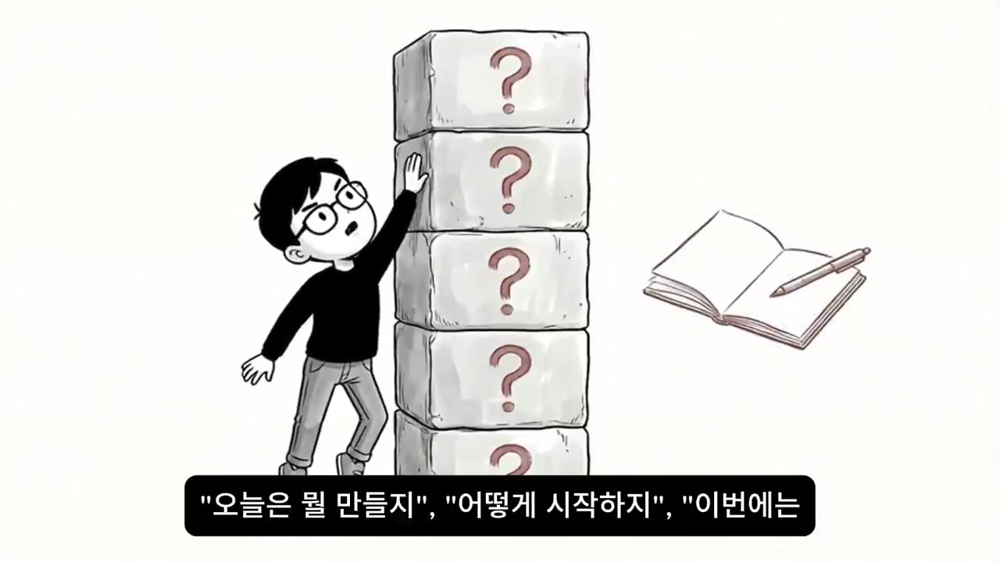
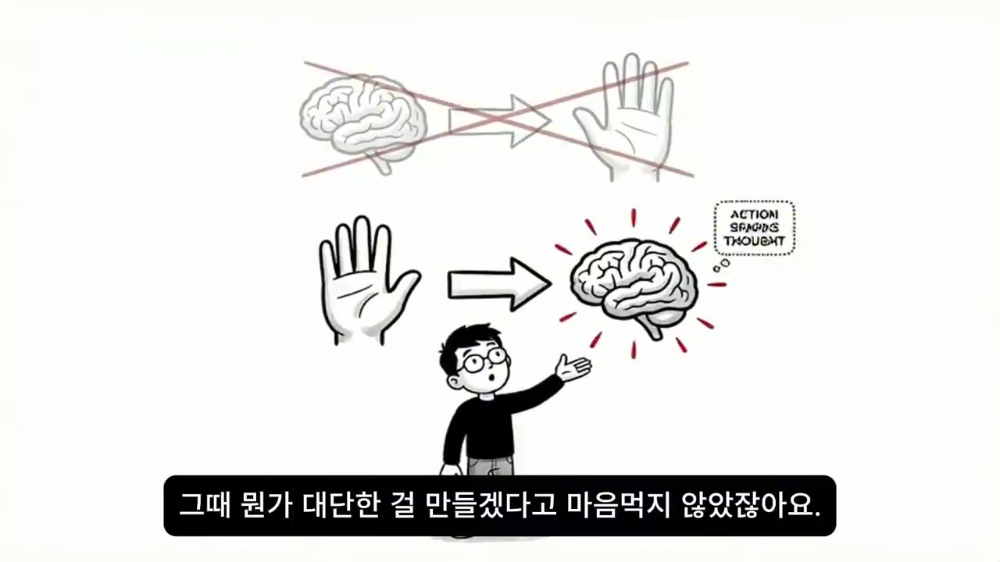
세그먼트 13은 일상적 반례를 나열한다. 낙서하려던 게 아닌데 펜을 들고 있었던 순간, 뭘 쓸지 정하지 않았는데 노트를 펼쳤던 순간, 산책 후 아이디어가 정리된 순간 모두 공통점이 있다. 상상과 판단이 아니라 손·몸이 먼저였고, “어? 괜찮은데”라는 감각은 행동 후에 왔다.
세그먼트 14는 이를 대뇌과학 문장으로 고정한다. 도파민은 행동의 전제조건만이 아니라 행동의 결과로도 분비된다. 즉 상상에서 소진된 것은 기대감 도파민일 뿐이며, 실행 후 도파민은 아직 UNTAPPED(미사용 연료)라는 설명이다.
세그먼트 15는 “의지로 상상을 이겨라”가 아니라 “뇌가 방어할 틈을 주지 마라”로 방향을 바꾼다. “오늘 뭘 만들지/어떻게 시작하지/이번엔 제대로 해야 하는데”라는 생각 자체가 상상 개시 신호이며, 이 순간 이미 도파민 소진-경보-보호모드가 연쇄적으로 켜진다고 본다. 물음표 블록이 높이 쌓인 도식은 바로 이 ‘생각의 벽’을 표현한다.
세그먼트 16은 최종 순서를 선언한다. 동기가 먼저 와서 행동하는 게 아니라, 행동이 먼저 일어나고 동기가 따라온다. 화면의 상단(뇌→손) 경로는 X 처리되고, 하단(손→뇌)은 강조되며 ACTION SPARKS THOUGHT 메시지로 정리된다.
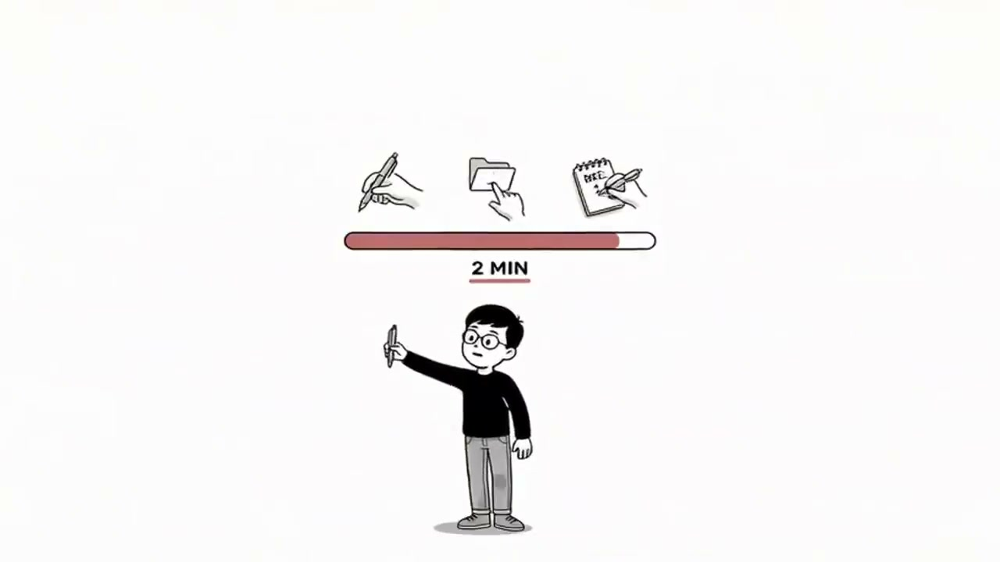
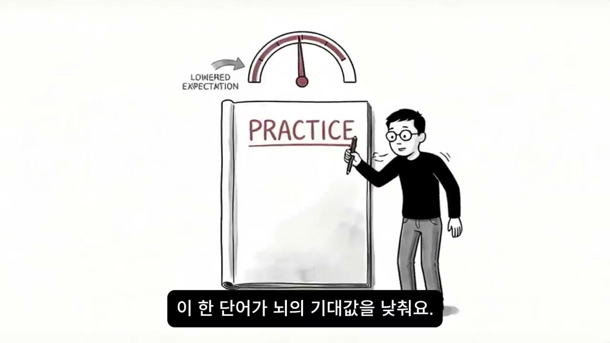
세그먼트 17은 실전 행동 지시가 매우 구체적이다. 좋아하는 일을 하기로 한 시간이 오면 생각을 시작하지 말고, 가장 작은 물리 행동 하나만 하라는 것이다. 예시로 펜 집기, 파일 열기, 노트 첫 페이지에 날짜 적기가 제시되며, 영상은 이 짧은 창(화면엔 2 MIN 바) 안에서 상상과 비교가 확장되기 전에 손을 선행시키라고 설명한다.
이 방식의 논리는 단순하다. 보호모드가 켜지기 전에 이미 행동이 시작되면, 뇌는 시작된 행동에 도파민을 붙이기 시작한다. 그래서 “의욕 생기면 시작”이 아니라 “시작하면 의욕 생성”으로 경로를 바꾼다.
세그먼트 18의 추가 장치는 명명이다. 시작 전에 종이든 파일 제목이든 어디든 연습(PRACTICE)이라고 적어 기대치를 낮춘다. 화면의 LOWERED EXPECTATION 계기판은 이 단어가 완성 압박을 낮춰 경보 수위를 떨어뜨린다는 메커니즘을 시각화한다.
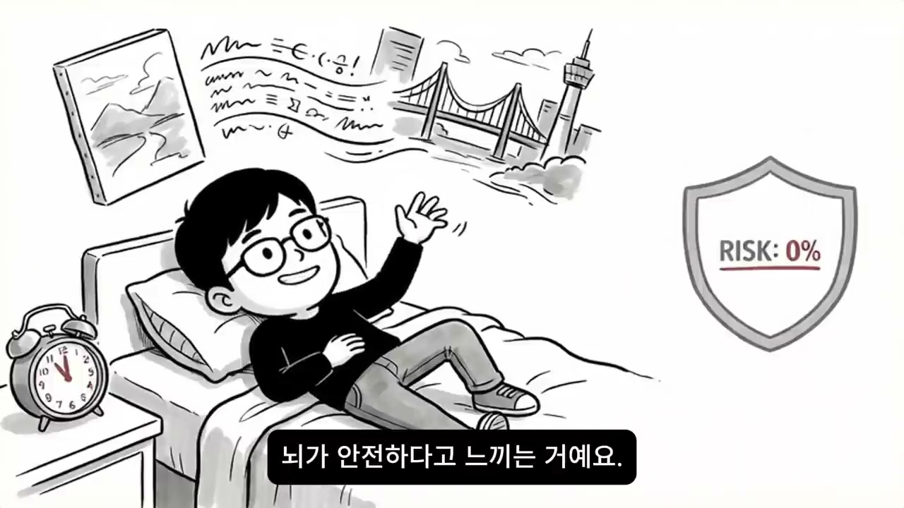
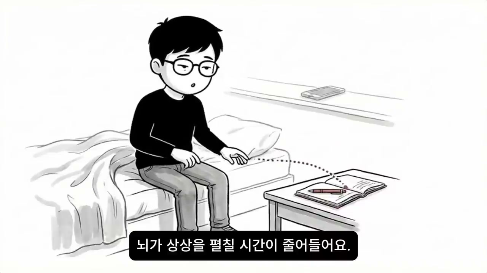
세그먼트 19는 시간대별 심리를 해석한다. 밤 11시에 갑자기 하고 싶은 마음이 치솟는 이유는, 그 시간엔 실제 실행이 어려워 뇌가 실패 위험을 거의 0으로 계산하기 때문이다. 화면의 RISK: 0% 방패는 “실행 불가능 시간대의 안전 착각”을 정확히 도식화한다.
따라서 밤에는 상상 확장을 하지 말고, 다음 날 아침의 시작점을 물리적으로 세팅하라고 말한다. 예를 들어 스케치북을 책상 위에 펼쳐 두기, 파일을 열어둔 채 절전 모드로 두기, 노트를 펼쳐 펜을 올려두기 같은 방식이다. 침대에서 손이 휴대폰보다 노트에 먼저 닿게 하는 배치가 핵심이며, 이는 “상상할 시간 자체를 줄이는 환경 설계”로 설명된다.
세그먼트 20 말미에는 추가 경고도 붙는다. 좋아하는 일을 통째로 한 덩어리로 보려 하면 뇌가 규모 자체를 위험으로 해석해 다시 보호모드에 들어간다. 즉 아침 세팅은 ‘크게 시작하기’가 아니라 ‘작게 닿기’여야 한다.
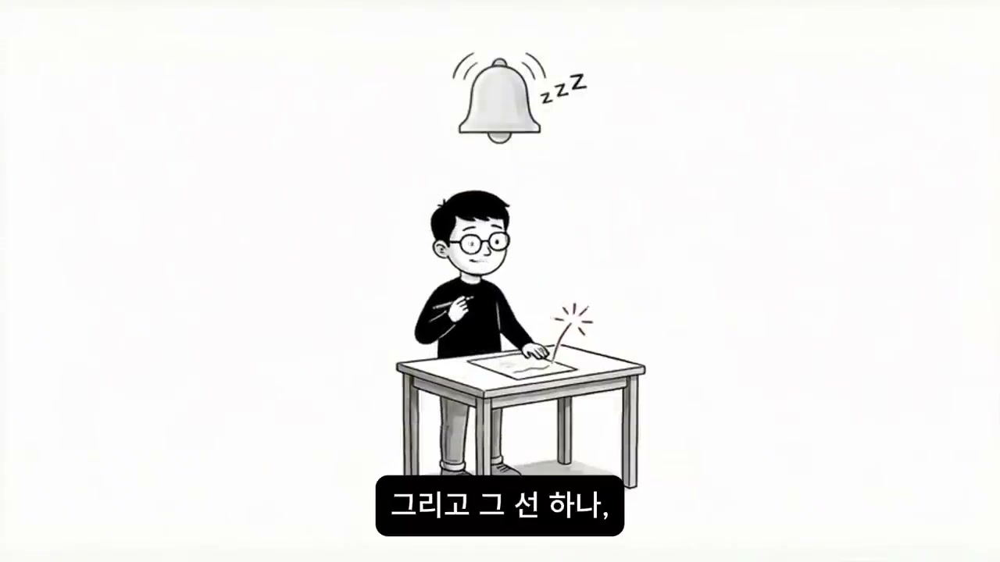
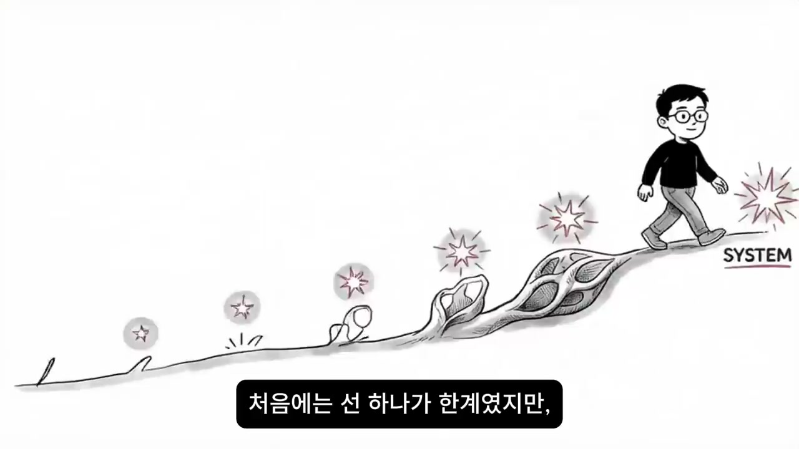
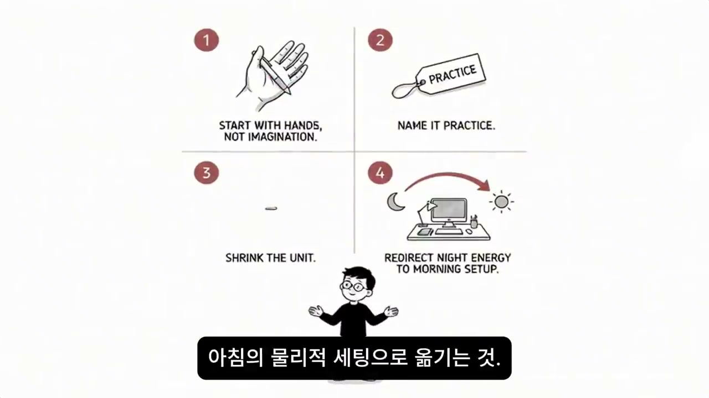
세그먼트 21은 단위 축소를 행동 수준으로 제시한다. “그림을 그려야지”가 아니라 “선 하나만 긋자”, “글을 써야지”가 아니라 “문장 하나만 쓰자”다. 이 정도 규모는 뇌 경보 시스템이 위협으로 인식할 임계치에 못 미치므로 저항이 낮다.
한 번 실행되면 작은 성공 신호가 보상회로를 자극한다. 이때 생기는 도파민은 상상 기반이 아니라 행동 기반이라 다음 행동으로 이어지는 힘을 갖는다. 즉 시작 자체가 보상을 만들고, 보상이 다음 시작을 부르는 자기증폭 고리가 된다.
세그먼트 22는 학습 메커니즘을 덧붙인다. 작은 행동을 실제로 할 때마다 뇌는 “이건 위험하지 않다”는 데이터를 축적하고, 보호모드 기준을 조금씩 낮춘다. 화면 문구 The system is now working. Action creates fuel, fuel enables more action.는 이를 시스템 언어로 요약한다.
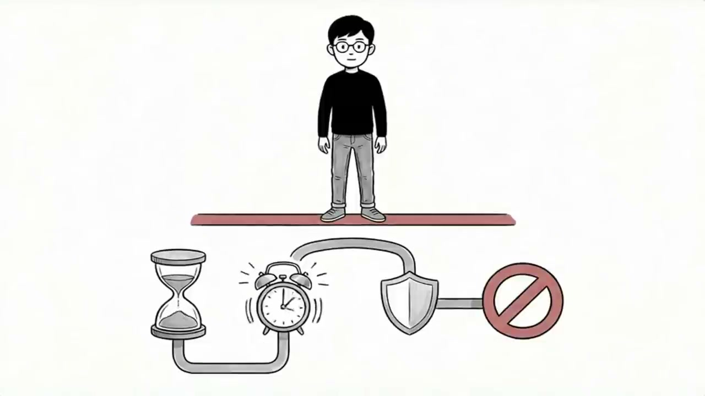
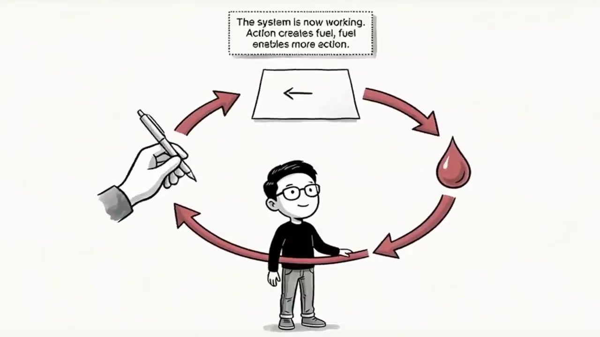
세그먼트 23의 4분할 보드는 영상 전체 처방을 압축한다. 1) START WITH HANDS, NOT IMAGINATION, 2) NAME IT PRACTICE, 3) SHRINK THE UNIT, 4) REDIRECT NIGHT ENERGY TO MORNING SETUP. 이 네 가지를 “당신의 뇌에 맞는 순서”라고 규정한다.
이어 “좋아하면 쉽게 해야 한다”는 문장이 얼마나 오래 사람을 짓눌렀는지 지적한다. 세그먼트 24~25의 핵심 재해석은 명확하다. 멈춘 이유는 의지 부족이 아니라, 좋아하는 마음이 너무 커서 상상과 의미 부하가 함께 커졌고 뇌가 강하게 보호했기 때문이다.
마무리 실행 문장은 구체적이다. 오늘 밤에도 욕구가 올라오면 생각을 펼치지 말고, 내일 아침 손이 닿을 곳에 시작점 하나를 놓아두라(스케치북/노트/열어둔 파일). 마지막으로 영상은 이 내용이 신경과학·심리학 기반의 교양 정보이며 의료적 진단/치료를 대체하지 않는다고 고지한다.
“못 하는 게 아니라 안 하게 돼요.”
“하고 싶은 건 확실한데, 어디서부터 손을 대야 할지가 안 잡혀요.”
“네 번째 지우고 나면… 글은 한 줄도 안 써져 있었어요.”
“나는 왜 좋아하는 것도 못하지.”
“좋아하는 마음이 부족한 게 아니에요. 뇌 작동 방식이 만든 구조적 오류예요.”
“도파민의 진짜 역할은 기대감이에요.”
“상상만으로 보상을 미리 받은 거예요. 뇌는 이미 했다고 착각해요.”
“의미가 클수록 보호 모드가 강하게 걸려요.”
“좋아하는 일이니까 시작이 안 되는 거예요.”
“행동이 먼저 일어나고 의욕이 따라오는 거예요.”
“연습이라고 적는 순간 기대값이 낮아져요.”
“당신이 의지가 약한 게 아니에요. 방법이 맞지 않았을 뿐입니다.”
이 영상의 핵심 메시지는 완벽주의를 성격 문제가 아닌 순서 문제로 재정의한 데 있다. 상상-동기-행동 순서를 따르면 멈춤이 반복되고, 행동-보상-확장의 순서로 바꾸면 시스템이 작동한다는 것이 전체 논리다.
실용적 시사점은 명확하다. 하고 싶은 일이 클수록 더 작게 시작하고, 밤의 의욕은 계획 확대가 아니라 아침의 물리 세팅으로 번역해야 하며, 시작 순간에는 사고보다 손을 우선해야 한다. 이때 ‘연습’이라는 명명은 완성 압박을 낮추는 심리적 안전장치로 기능한다.
향후 전망 관점에서는, 이 프레임이 창작(글/그림)뿐 아니라 공부, 운동, 사이드프로젝트, 커리어 전환 같은 고의미 과업 전반에 확장 가능하다. 특히 “의욕이 생기면 시작” 모델이 자주 실패하는 사람에게는, 환경-타이밍-단위 설계 중심의 실행 프로토콜이 더 재현성 높은 방법임을 보여준다.
댓글
GitHub 이슈 기반 댓글 시스템입니다.